Gill James
Work examples for Permanent Impermanence
 ice cream scoop
ice cream scoop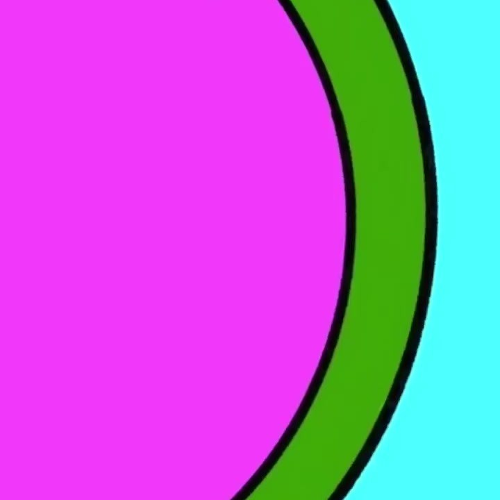
ceramic cup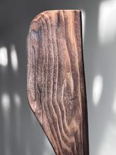
carved paddle and tray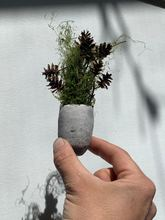
moss vessel bowl rim
bowl rim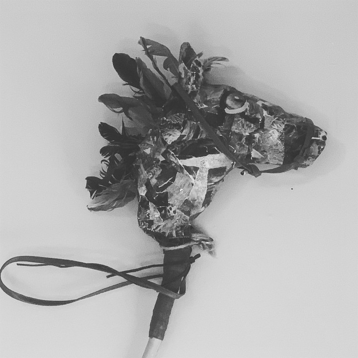
hanging sculptureSpirit Eye of skwácháýs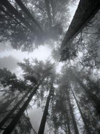
forest canopy rosebuds
rosebuds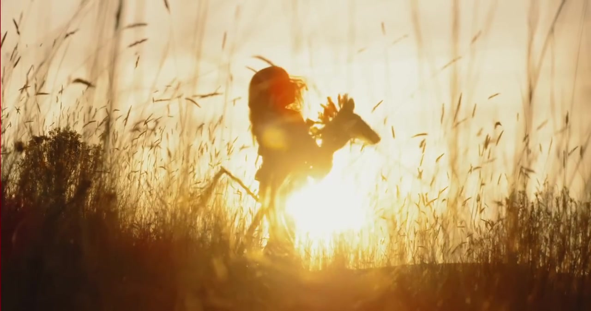
Weird Kid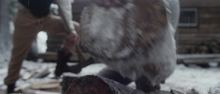
One With the Devil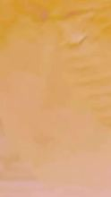
untitled colour work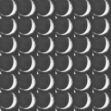
Lost in Time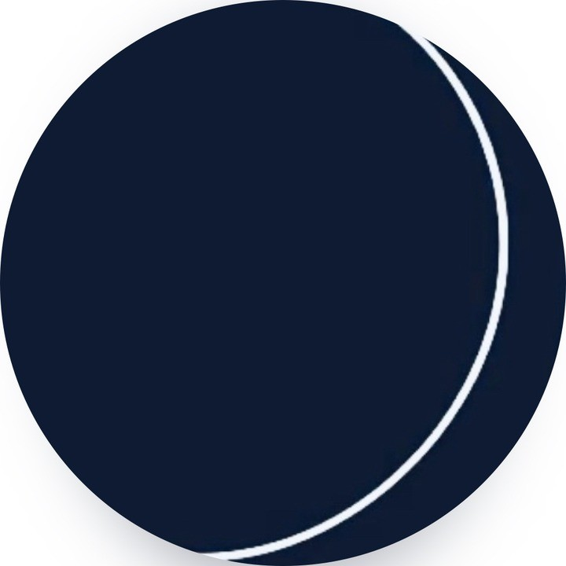
CVEach star is a work. Drag sideways to move through them. Tap one to open it, or pinch into it. Pinch out to step back to everything.
begin ↓
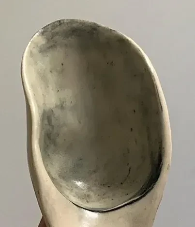

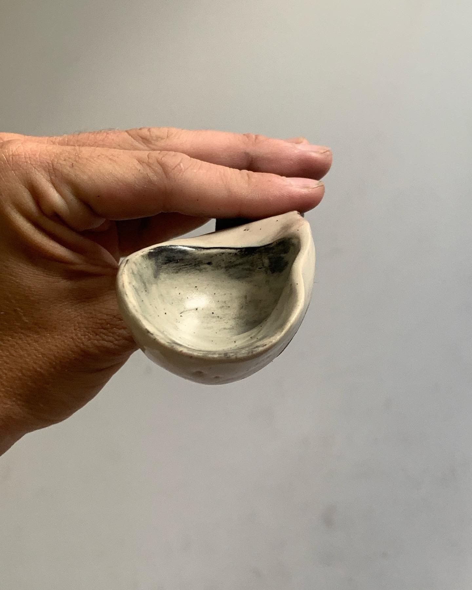
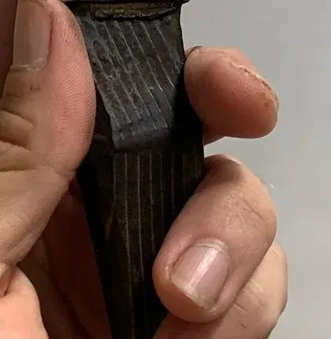
Objects · 1 of 13
ice cream scoop


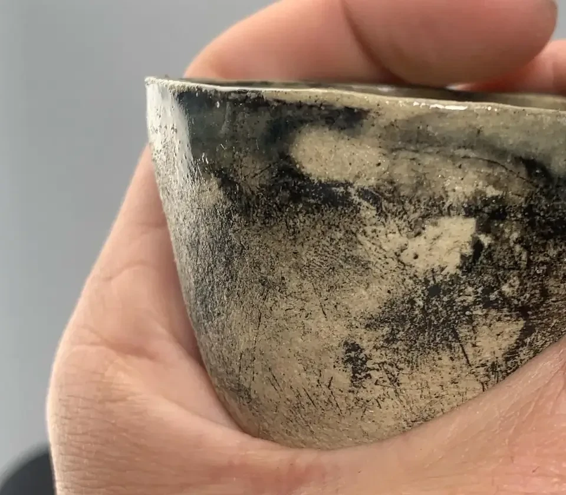


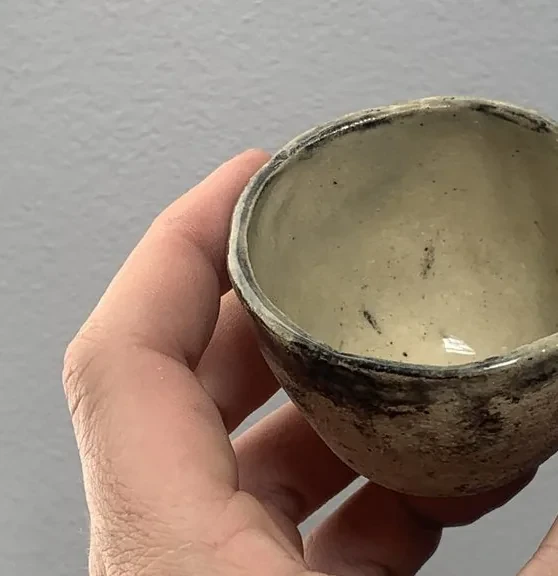


Objects · 2 of 13
ceramic cup
Objects · 3 of 13
carved paddle and tray
Objects · 4 of 13
moss vessel
Objects · 5 of 13
bowl rim
Sculpture · 6 of 13
hanging sculpture
Sculpture · 7 of 13
Spirit Eye of skwácháýs
Photographs · 8 of 13
forest canopy
Photographs · 9 of 13
rosebuds
Film · 10 of 13
Chris Malinchak and Kiesza · Weird Kid
Director, Director of Photography · music video · 03:44
dir. Gill James & Kiesza
Film · 11 of 13
One With the Devil
Cinematographer · short · 2015 · dir. Drew Pollins
Leo Award, Best Cinematography in a Short Drama (2015)
CSC Cinematography Award (Panavision Canada) 2015
Film · 12 of 13
untitled colour work
2022
Untitled colour work. 2022. Moving image, 8 seconds.
Sound · 13 of 13
Lost in Time
Lost Coffee · 3:36